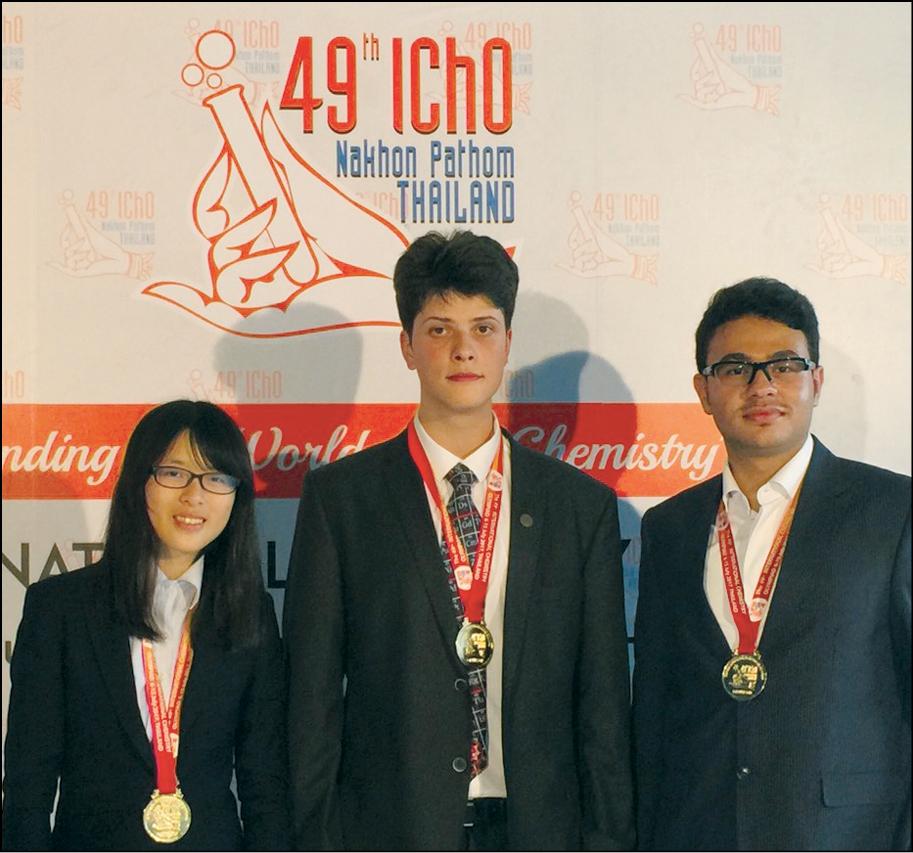

High School

The summer prior to my first year of high school, I was super into natural science. I had so many unanswered questions like what the smallest particle
is in the world. Giving my competitive personality, I decided to join the olympiad program in my high school and chose chemistry for my subject.
Over the last thirty years in Iran, my home country, there were less than five people who won the gold medal of national chemistry Olympiad in their
sophomore year of high school. My goal was to be one those a few people, and I succeded. With more studying and training over my junior year of high school,
I won the gold medal of international chemistry olympiad with the second-highest theoretical score and third-highest total score.
Academic Journey
Throughout my academic journey, I have developed a profound passion for exploring the frontiers of Artificial Intelligence (AI) and its potential to revolutionize various industries. At MIT, I have had the privilege of engaging with cutting-edge research, attending thought-provoking lectures, and collaborating with some of the brightest minds in the field. My rigorous coursework and research experiences have provided me with a solid foundation in both theoretical and practical aspects of computer science and mathematics.
AI Enthusiasm
AI has always been at the core of my interests, and I am particularly fascinated by the transformative power of Graph Neural Networks (GNNs). Understanding the intricate relationships within complex data structures and leveraging that knowledge to solve real-world problems has been a driving force behind my studies. My enthusiasm for AI lies not only in its technical aspects but also in its potential to shape a better future for society.
Graph Neural Network Research
My focus on Graph Neural Networks has allowed me to delve deep into this exciting area of AI. Through various projects and research initiatives, I have explored the application of GNNs in diverse domains, including natural language processing and drug discovery. As a firm believer in open collaboration, I actively participate in discussions and contribute to the AI research community to foster innovation and drive progress.
Future Aspiration:
As I approach the final year of my undergraduate studies, I am excited about the prospects of continuing my journey in AI research. My goal is to pursue advanced studies in Artificial Intelligence, contributing my expertise to further the development of cutting-edge technologies that have a positive impact on our world.
Beyond Academics
When I'm not immersed in code or solving mathematical puzzles, you can find me running or rowing. Also, I love travelling.